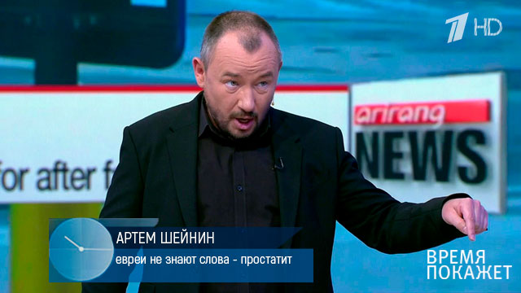

Очередной скандал разразился в фармацевтической сфере.
Что нам продают "наглые" аптеки для лечения простатита и причем здесь вообще евреи?
Сегодня мы ответим на эти вопросы! В студии Артём Шейнин.

Как свидетельствует медицинская статистика, сегодня практически нет мужчин старше 35 лет, у которых простата была бы в полном порядке. У кого-то она только начинает распухать, у кого она уже распухла настолько, что перекрыла мочевыводящие протоки и принесла множество проблем с мочеиспусканием. Но даже в этом случае мужчины не бегут в клиники за лечением. Почему?
Да потому что каждый из нас знает, что лечение простатита очень неприятная и дорогостоящая процедура. Необходимо пить много антибиотиков и ходить к урологу на ректальный массаж. И даже если все это и удастся пережить, то с 90% вероятностью простатит вернется снова.
Прокомментировать ситуацию я попросил ведущего уролога страны, заведующего кафедрой урологии МГМСУ, заслуженного врача РФ, главного уролога Министерства здравоохранения, члена-корреспондента РАН, профессора Пушкаря Дмитрия Юрьевича
Артём Шейнин: "Дмитрий, расскажите что будет если не лечить простатит и частое мочеиспускание? Правда ли, что на простате может появиться раковая опухоль?"
Дмитрий Пушкарь: Всем доброго дня. Да, это действительно правда. Простатит никогда не проходит сам по себе – со временем он только усиливается. Если появились проблемы с мочеиспусканием, значит, дела уже плохи – простата уже сильно распухла, и раковые клетки могут появиться в любой момент. Как правило, от начала проблем с мочеиспусканием до начала развития онкологии (при отсутствии лечения простатита) проходит всего 1-1,5 года. Сначала рак не дает о себе знать, раковые клетки накапливаются, а уже потом появляется опухоль. Человек через некоторое время умирает. Рак простаты не лечится.
Чтобы вы могли оценить масштабность проблемы и понять, что игнорирование проблем с простатой и мочеиспусканием – это одна из роковых ошибок мужчин, покажу несколько фотографий.
Артём Шейнин: "Внимание на экран!"
1. Рак простаты у мужчины 41 год. Умер. Осталось 2 маленьких детей
2. Сильное воспаление простаты. Потребовалась срочная ампутация железы. Мужчина стал импотентом
3. Аденома простаты. Была вовремя обнаружена. Рака удалось избежать
4. Почечная недостаточность, появившаяся из-за наличия гнойного агента в простате
Артём Шейнин: "Ужасные кадры. Расскажите какие на данный момент есть действительно работающие способы лечения простатита?"
Дмитрий Пушкарь: Да, конечно. Дело в том, что причина развития простатита была точно установлена лишь 12 лет назад. За это открытие ученые были номинированы на Нобелевскую премию. Основанная причина ослабления здоровья и иммунитета простаты и, как следствие, подверженность ее патогенной микрофлоре заключается в снижении организмом выработки гормона тестостерона, которое происходит У КАЖДОГО МУЖЧИНЫ с возрастом. Именно поэтому простатит чаще всего возникает у мужчин после 35-40 лет. Например, в 35 лет уровень тестостерона снижается на 20% в сравнении с 25 годами, а в 45 уже практически на 50%.
Без тестостерона простата не может нормально работать. В ней происходит застой, в котором развивается инфекционный агент, который и приводит к увеличению самой железы (за счет большого содержания гноя), перекрытию мочевыводящих протоков, появлению раковых клеток. Соответственно, чем старше человек становится, тем в более худшем состоянии находится его простата.
Однако сегодня оздоровить простату несложно. После того, как было выяснено, что она страдает из-за нехватки тестостерона, появился целый класс препаратов, направленных на нормализацию его выработки организмом (до уровня 25 лет). Помимо оздоровления простаты повышение уровня тестостерона оказывает еще множество других полезных действий на мужское здоровье, в том числе повышает либидо и потенцию.
Артём Шейнин: "Я так понимаю таких препаратов не найти в наших аптеках?"
Дмитрий Пушкарь: Да, Артём, все верно. Не для кого не секрет, что аптеки - это бизнес. Они заинтересованы в том, чтобы покупатели возвращались к ним снова и снова. Поэтому аптекам невыгодно продавать препараты, которые полностью избавят человека от его заболевания. Именно поэтому большинство аптечных дорогостоящий препаратов направлены лишь на временное снятие симптоматики. То есть на решение следствия, а не самой причины. Поэтому среди многих мужчин родился миф, что простатит нельзя вылечить навсегда и он будет появляться снова и снова.
Мало того, данные препараты не только "выкачивают" из наших граждан деньги, но и имеют ряд сильнейших побочных действий на другие органы человека. Что как следствие вынуждает человека лечиться потом и от побочных последствий. А куда он пойдет за лекарствами? Правильно. В аптеку. Думаю, смысл понятен.
Артём Шейнин: "Дмитрий, вы меня простите, я пока вынесу в студию ведро с аптечными препаратами для лечения простатита"
Артём Шейнин: "Именно поэтому такую информацию не пускают в СМИ и запрещают на федеральных каналах?"
Дмитрий Пушкарь: К сожалению да.
Артём Шейнин: "Хорошо. Вы можете рассказать о действительно рабочих препаратах?"
Дмитрий Пушкарь: Конечно. В конце 2016 года по заданию Минздрава РФ в НИИ Уронефрологии мы провели клинические испытания 9 таких препаратов, имеющихся на сегодняшний день. Самым эффективным (который по эффективности почти в 2 раза обогнал ближайшего конкурента) оказался отечественный препарат, разработанный НИИ урологии и интервенционной радиологии им. Н.А. Лопаткина. Он называется Урелайн. Название на английском языке обусловлено широкой популярностью данного препарата в Европе, поэтому Урелайн идет на импорт.
*Клинические исследования проводились на базе НИИ Уронефрологии. Всего в исследованиях участвовало около 1000 добровольцев возрастом от 35 лет.
Артём Шейнин: "Расскажите подробнее об этом препарате."
Дмитрий Пушкарь: Урелайн – полиактивный биогенный препарат ОТЕЧЕСТВЕННОГО производства, представляющий собой комплекс наиболее полезных для мужского организма веществ – грибы шиитаке и рейши, экстракт семян тыквы, ликопин, экстракт листьев готу кола. Также в состав входит большое количество экстракт ягод клюквы. И, самое главное, экстракты плодов пальмы сабаль и коры пиджеума. И самое главное кора африканской сливы - пиджеум. Пиджеум является самым действенным растительным средством для лечения простатита, который известен на данный момент.
Так же интересен тот факт, что в Израиле именно евреи первые стали использовать пиджеум для лечения простатита. Именно поэтому еврейские мужчины почти никогда не имеют проблем с данным заболеванием и до глубокой старости их тестостерон находится на уровне мужчин возраста 20-25 лет.
Урелайн отличается от многих других препаратов тем, что в его производстве применена новая технология экстракции (так называемая холодная экстракция), которая позволяет сохранить максимум полезных биологически активных веществ из растений. Именно за счет этого, по мнению специалистов, он и обладает такой высокой эффективностью.
За счет того, что Урелайн состоит исключительно из растительных компонентов и не содержит никакой химии, его можно принимать без назначения врача для домашнего оздоровления простаты.
График восстановления уровня тестостерона при приеме "Урелайн"
Артём Шейнин: "Есть ли шанс, что этот препарат все-таки появится в аптеках?"
Дмитрий Пушкарь: Дело в том, что НИИ Ревматологии не занимается коммерческой деятельностью. И мы не продаём препарат, а распространяем его за чисто символическую цену в 978 ₽ в рамках специальной программы. Этого хватает нам, чтобы окупать его производство. А зарабатываем мы на импорте. Именно в этом и состоит основной конфликт с аптечными сетями. Они хотят зарабатывать на больных людях, выжимая из них максимум денег. Старые и неэффективные лекарства для этого подходят идеально. Тогда как препарат мало того, что решает проблему навсегда, так ещё и распространяется в России по себестоимости производства.
Артём Шейнин: "Почему такая низкая цена? Официально заявленная цена на Урелайн - 2799 рублей."
Дмитрий Пушкарь: Как я уже сказал выше, сейчас проходит федеральная программа "Мужское Здоровье". В рамках этой программы официально приобрести препарат можно по цене 978 ₽ за упаковку.
Сроки программы, с 1 по 20 мая 2019 года включительно.
Специалисты НИИ создали специальный сайт на котором можно оставить заявку на "Урелайн" и получить его за 978 ₽. Всё, что нужно сделать - это просто оставить свое имя и контактные данные. После этого с вами свяжутся для уточнения удобного времени доставки. Мы постарались сделать все максимально просто, чтобы каждый мог получить лекарство, даже если раньше ничего не заказывал через интернет.
Артём Шейнин: "Вы понимаете, что нашу передачу посмотрят миллионы мужчин. Сколько упаковок препарата вы сможете продать по такой минимальной цене? Ведь сейчас хлынут тысячи заказов."
Дмитрий Пушкарь: На данный момент у нас на складе осталось около 7000 коробок. Надеюсь, до конца акции хватит всем.
Артём Шейнин: "Действительно хороший запас. К сожалению время нашего эфира заканчивается, но надеюсь, что мы успели донести основную информацию нашим гражданам. Спасибо что смогли раскрыть такую важную тему, Дмитрий. У вас есть что сказать на прощание нашим зрителям?"
Дмитрий Пушкарь: Я хочу обратить внимание читателей, что заболевания простаты «молодеют», и даже слабые периодичные боли и частые походы в туалет — повод обратить внимание на проблему. Не надо дожидаться, пока появится рак предстательной железы и вы будете просто ждать своей смерти.
Важно! Был сделан вывод, что Май - лучшее время для начала лечения заболеваний простаты. Благодаря понижению средней температуры, ускоряется обмен веществ, усиливается циркуляция крови в организме, увеличивается приток крови и кислорода во внутренние органы, эффект от использования препарата возрастает.
Эффектиновсть лечения увеличивается в среднем на 67%, чем это происходило бы в другое время года. Восстановление функций организма происходит на 100% в течение всего курса лечения.
Иван Богомолов (Москва)
Шейнин, мужик. Не прогнулся под систему. Уважаю.
Ю.Аксенов (Ижевск)
Спасибо за интересный выпуск! В России все коррумпировано на высшем уровне, хорошо, что интернет пока еще доступен. Заказал Урелайн. Буду лечиться.
Николай Новиков (Санкт-Петербург)
ППолностью подтверждаю! Урелайн – чудо-препарат. Купил его в Черногории за 90 баксов, когда отдыхать ездил прошлым летом. До этого мучился от хронического простатита лет 10 точно. Пробовал лечить, но как написано выше, лечение давало лишь временный эффект. С использованием Урелайна простатит прошел полностью. Больше чем за полгода ни разу не давал о себе знать. Раньше о таком мог только мечтать. Рекомендую Урелайн всем мужикам. Он поможет!
Аркадий (Киев)
Заказал. Действительно упаковка Урелайн обошлась всего 978 ₽.))) Приятно удивлен. В аптеках наших продажных цены бы такие поставили! Спасибо!
Михаил Игоревич (Москва)
Неужели это все правда? Я был у уролога, он ни слова ни сказал про Урелайн, выписал Галотестин, который стоит 5800 за пачку! И при этом у него еще куча побочек. У меня просто нет таких денег, поэтому буду пробовать наш препарат, тем более в рамках программы надо успеть приобрести за такую цену.
Диана (Москва)
Я мужа младше на 17 лет. У нас уже трое детей, он уже в возрасте, это дает о себе знать. Но я не готова ставить крест на себе, как на женщине надеюсь что поможет
Евгений Дайнеко (неизвестно)
У меня знакомый умер от аденомы, в 46 лет, двое пацанов осталось. Сам тьфу тьфу не страдал этим пока, может Урелайн и для профилакти можно? Как раз морозы начались.
Роман (Челябинск)
Жень, не можно, а нужно. В холодное время года всем кому за 35 нужны такие препараты для профилактики. Это как витамины для мужчин. Да и потенцию поднимаю за счет пиджеума и экстракта готу колы. Я закупился на пару сезонов пока акция, теперь дома на полочке держу.
Антонина (Курск)
Заинтриговали :) Надо мужу заказать. За такую цену почему бы не попробовать, не жалко даже если не поможет.
Павел (Омск)
Всегда терпел и думал, что уже никак не избавлюсь от этого ужаса. Теперь думаю заказать этот препарат, надеюсь поможет.
Антон Игоревич (Киев)
Спасибо за ссылку! Давно искал производителя и препарат. В 43 начались проблемы с походами в туалет, сосед на даче рассказывал про наше средство, но где купить, не знал. Надеюсь, что сейчас все получится!
Кристина Вячеславовна (Свердловск)
Надо мужу такой заказать, Шейнин такой красавчик :)
Константит Котов(Ярославль)
Мужики - это супер препарат!!! Решил пропить его для профилактики. В итоге – как будто вернулся в молодость. Появились силы, энергия, настроения, потенция. Хочется жить и двигаться. Вот что значит повышение уровня тестостерона!! До этого уже стариком себя в 42 года чувствовал. Рекомендую всем, кто не пробовал! Главное что все натуральное, никаких сраных побочек!
Роман (Владивосток)
А я мед с грециким орехом ем!
Ксения (Москва)
Шейин очень крутой! Мужчины, берите с него пример!

Комментарии